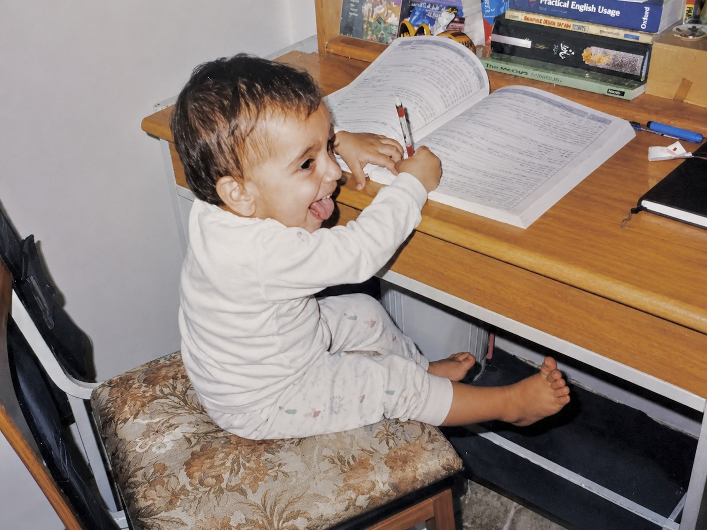

This is me, when I was three years old. I'm copying my older sister, who I had watched sit at this same desk with a pen and a big book, and I'm having the time of my life pretending to know things.
I didn't need to understand anything to enjoy it. The pen, the pages, the feeling of being someone who studies: that was enough.
As I got a little older, the pretending turned into questions. I once asked my dad what salt was made of. In my head, a grain of salt was the smallest thing in the world, and I wanted to know what could possibly be inside something that small. What is even smaller than the smallest thing?
He literally tried to explain NaCl to me. I was six at the time, and of course I didn't understand. But that didn't stop me from asking more weird questions.
I loved school. Yes, I was a nerd. But then the competition started. There was an exam to decide whether I would get into the school for gifted students, and somewhere around that exam, something changed. I don't remember enjoying anything after that. Solving a math problem stopped feeling good. It just felt necessary. I wasn't learning anymore; I was trying to survive.
In high school, no matter what I did, I could look around and see thirty other people doing exactly the same thing. Nothing I did felt special. I got my head so deep into the competition that I forgot what the point was.
I wasn't asking what salt was made of anymore. I was asking whether I was better than the person next to me.
That mindset followed me all the way through my bachelor's degree. I hated almost every course. The only moments I enjoyed were the rare ones when I was alone with a homework problem, with no way of knowing whether I was doing better or worse than anyone else. Just me and the problem.
Starting my PhD helped me change my mindset. Research is a place where you have to think on your own. Of course you still compare your work to others', but everyone is working on their own small corner of science, and nobody is solving the same problem at the same desk as you.
For the first time in a long time, I found myself thinking: hmm, maybe it's not so bad, sitting in this corner and reading.
I think that three-year-old was onto something. She didn't know anything, and she didn't care who knew more. She just wanted to be at the desk. I'm slowly finding my way back to her.